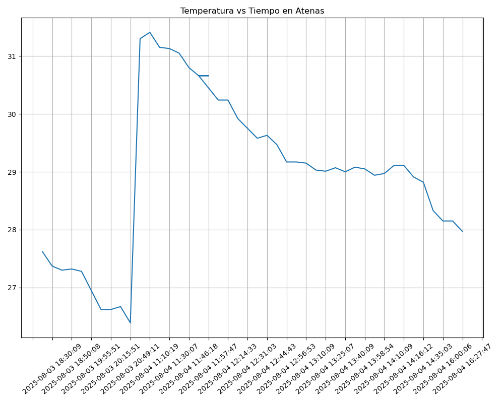
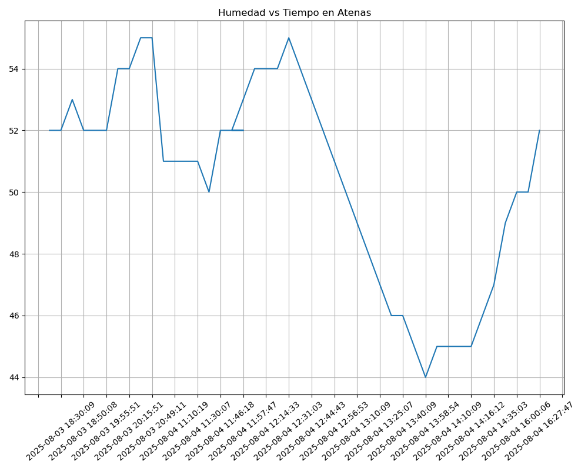

Proyecto ICCD332 Arquitectura de Computadores
Índice
1. Atenas, Grecia Weather APP
Este es el proyecto de fin de semestre en donde se pretende demostrar las destrezas obtenidas durante el transcurso de la asignatura de Arquitectura de Computadores.
- Conocimientos de sistema operativo Linux
- Conocimientos de Emacs/Jupyter
- Configuración de Entorno para Data Science con Mamba/Anaconda
- Literate Programming
1.1. Estructura del proyecto
Se recomienda que el proyecto se cree en el home del sistema operativo i.e. home/<user>. Allí se creará la carpeta CityWeather
cd mkdir AtenasWeather cd AtenasWeather/ pwd
/home/alex_1805/AtenasWeather
El proyecto ha de tener los siguientes archivos y subdirectorios. Adaptar los nombres de los archivos según las ciudades específicas del grupo.
.
├── AtenasTemperatureAnalysis.ipynb
├── clima-atenas-hoy-d.csv
├── clima-atenas-hoy.csv
├── get-weather.sh
├── get-weather.sh~
├── main.py
├── main.py~
├── output.log
└── weather-site
├── build-site.el
├── build.sh
├── content
│ ├── images
│ │ ├── humedad.png
│ │ └── temperature.png
│ ├── index.org
│ └── index.org~
└── public
├── images
│ ├── humedad.png
│ └── temperature.png
└── index.html
6 directories, 17 files
Puede usar Emacs para la creación de la estructura de su proyecto
usando comandos desde el bloque de shell. Recuerde ejecutar el bloque
con C-c C-c. Para insertar un bloque nuevo utilice C-c C-, o M-x
org-insert-structure-template. Seleccione la opción s para src y
adapte el bloque según su código tenga un comandos de shell, código de
Python o de Java. En este documento .org dispone de varios ejemplos
funcionales para escribir y presentar el código.
echo 'Comandos:' cd AtenasWeather/ mkdir weather-site cd weather-site/ pwd mkdir content mkdir public cd content/ pwd mkdir images cd images/ cd .. cd public/ mkdir images
Comandos: /home/alex_1805/AtenasWeather/weather-site/content/weather-site /home/alex_1805/AtenasWeather/weather-site/content/weather-site/content
1.2. Formulación del Problema
Se desea realizar un registro climatológico de una ciudad \(\mathcal{C}\). Para esto, escriba un script de Python/Java que permita obtener datos climatológicos desde el API de openweathermap. El API hace uso de los valores de latitud \(x\) y longitud \(y\) de la ciudad \(\mathcal{C}\) para devolver los valores actuales a un tiempo \(t\).
1.3. Descripción del código
En esta sección se debe detallar segmentos importantes del código desarrollado así como la estrategia de solución adoptada por el grupo para resolver el problema. Divida su código en unidades funcionales para facilitar su presentación y exposición.
1.3.1. Lectura del API
En esta sección se importan las librerías:
# https://openweathermap.org/current#one # https://www.w3schools.com/python/module_requests.asp import requests #Esta libreria permite hacer peticiones a la API import os import csv from datetime import datetime
En esta sección, se define la longitud, latitud de Atenas. Además, se define la clave del api asi como también la ruta al archivo .csv donde se guardará la información.
ATENAS_LAT = 37.9795 ATENAS_LONG = 23.7162 API_KEY = "16f7df2e30eff6d81c157efb5989dc4b" FILE_NAME = "/home/alex_1805/AtenasWeather/clima-atenas-hoy.csv"
1.3.2. Arreglo de Columnas
Se define un conjunto de columnas preestablecidas con orden y nombre, ya que esto evita que una fila tenga más o menos columnas que otra y evitar romper la alineación del csv.
COLUMNAS_CSV = [ "dt", "coord_lon", "coord_lat", "weather_0_id", "weather_0_main", "weather_0_description", "weather_0_icon", "base", "main_temp", "main_feels_like", "main_temp_min", "main_temp_max", "main_pressure", "main_humidity", "main_sea_level", "main_grnd_level", "visibility", "wind_speed", "wind_deg", "wind_gust", "clouds_all", "sys_type", "sys_id", "sys_country", "sys_sunrise", "sys_sunset", "timezone", "id", "name", "cod" ]
1.3.3. Obtención de los datos del API
En esta función, lo que se hace es una llamada a OpenWeather usando las coordenadas de Atenas, construyendo una URL, con los parámetros lat, lon y api. Además, las unidades están especificadas en "metric" por lo que la temperatura se mostrará en grados centigrados.
Se utiliza try, para evitar que el programa se detenga si ocurre un error. En este caso, si ocurre un error de conexión mostrará un mensaje sin que el programa cierre.
# https://www.hackersfriend.com/articles/get-current-weather-of-any-city-with-python-using-openweathermap-api def getweatherdata(lat, lon, api): url = f"https://api.openweathermap.org/data/2.5/weather?lat={lat}&lon={lon}&appid={api}&units=metric" try: response = requests.get(url) #Se envia la solicitud al API if response.status_code == 200: return response.json() #Si la solicitud fue exitosa, devuelve un json else: print(f"Error en la solicitud HTTP: {response.status_code}") return None except requests.exceptions.RequestException as e: print(f"Error al conectar con la API: {e}") return None
1.3.4. Guardar los datos en un archivo .csv
Con esta función, lo que se busca es guardar los archivos en un archivo .csv, teniendo como parámetros a la respuesta del json de la función anterior y al nombre del archivo csv.
def escsv(json_response, csv_name): with open(csv_name, 'a', newline = '') as csv_file: #Abre el archivo en modo append 'a', para agregar sin borrar lo anterior. fieldnames = json_response.keys() writer = csv.DictWriter(csv_file, fieldnames = COLUMNAS_CSV) # Se definen los encabezados, a partir del arreglo anterior. if csv_file.tell() == 0: # Si el archivo esta vacío, escribe la fila del encabezado. writer.writeheader() writer.writerow({k: json_response.get(k, "") for k in COLUMNAS_CSV}) # Escribe una fila con los datos del diccionario json
1.3.5. Organización del Json
En esta función, tomamos el json de la API, y se lo organiza en orden.
# https://stackoverflow.com/questions/51359783/how-to-flatten-multilevel-nested-json def formato_csv(original_json): result_dict = {} # Se crea un diccionario vacío for key, value in original_json.items(): # Se itera las claves y valores del diccionario if isinstance(value, dict): # Si vuelve a ser un diccionario, se vuelve a iterar, obteniendo subclaves y subavalores for key_s, value_s in value.items(): result_dict[f"{key}_{key_s}"] = value_s elif isinstance(value, list): # Si el valor es una lista, se itera el indice y el item. for idn, item in enumerate(value): for key_s, value_s in item.items(): result_dict[f"{key}_{idn}_{key_s}"] = value_s else: result_dict[key] = value # Si no es ni lista ni diccionario, lo copia tal cual. csv_orden = {'dt' : result_dict.pop('dt')} # Se coloca la fecha (dt) al principio csv_orden.update(result_dict) return csv_orden
1.3.6. Función main
def main(): print("---Clima Atenas, Grecia---") atenas_wea = getweatherdata(lat = ATENAS_LAT, lon = ATENAS_LONG, api = API_KEY) #Llama a la función, lo cual genera una solicitud al API if atenas_wea['cod'] != 404: #Si la ubicación es encontrada, el programa continúa. atenas_wea_for = formato_csv(atenas_wea) #Se declara esta variable, para guardar el formato del json para csv. print(atenas_wea) print("-----") print(atenas_wea_for) escsv(json_response = atenas_wea_for, csv_name = FILE_NAME) # Escribe los datos en un archivo .csv else: print("Ciudad no encontrada") if __name__ == "__main__": main()
1.4. Script ejecutable sh
Se coloca el contenido del script ejecutable. Recuerde que se debe utilizar el entorno de anaconda/mamba denominado iccd332 para la ejecución de Python; independientemente de que tenga una instalación nativa de Python
En el caso de los shell script se puede usar `which sh` para conocer la ubicación del ejecutable
which sh
/usr/bin/sh
De igual manera se requiere localizar el entorno de mamba iccd332 que será utilizado
which mamba mamba env list
/home/alex_1805/miniforge3/condabin/mamba Name Active Path ──────────────────────────────────────────────────────────────────── base /home/alex_1805/.local/share/mamba iccd332 * /home/alex_1805/.local/share/mamba/envs/iccd332
Con esto el archivo ejecutable a de tener (adapte el código según las condiciones de su máquina):
#!/usr/bin/sh /home/alex_1805/miniforge3/etc/profile.d/conda.sh eval "$(conda shell.bash hook)" conda active iccd332 python3 /home/alex_1805/AtenasWeather/main.py
Finalmente convierta en ejecutable como se explicó en clases y laboratorio
#!/usr/bin/sh chmod +x get-weather.sh
1.5. Configuración de Crontab
Se indica la configuración realizada en crontab para la adquisición de datos. En este caso, los datos se obtienen cada 10 minutos.
*/10 * * * * /home/alex_1805/AtenasWeather/get-weather.sh >> /home/alex_1805/AtenasWeather/output.log 2>&1
- Recuerde que
2>&1permite guardar enoutput.logtanto la salida del programa como los errores en la ejecución.
2. Presentación de resultados
Para la pressentación de resultados se utilizan las librerías de Python:
- matplotlib
- pandas
2.1. Muestra Aleatoria de datos
Presentar una muestra de 10 valores aleatorios de los datos obtenidos.
import os import pandas as pd from datetime import datetime # lectura del archivo csv obtenido df = pd.read_csv('/home/alex_1805/AtenasWeather/clima-atenas-hoy-d.csv') # se imprime la estructura del dataframe en forma de filas x columnas print(df.shape)
Resultado del número de filas y columnas leídos del archivo csv
(51, 30)
table1 = df.sample(10) table = [list(table1)]+[None]+table1.values.tolist()
| dt | coordlon | coordlat | weather0id | weather0main | weather0description | weather0icon | base | maintemp | mainfeelslike | maintempmin | maintempmax | mainpressure | mainhumidity | mainsealevel | maingrndlevel | visibility | windspeed | winddeg | windgust | cloudsall | systype | sysid | syscountry | syssunrise | syssunset | timezone | id | name | cod |
|---|---|---|---|---|---|---|---|---|---|---|---|---|---|---|---|---|---|---|---|---|---|---|---|---|---|---|---|---|---|
| 2025-08-03 20:36:53 | 23.7162 | 37.9795 | 800 | Clear | clear sky | 01n | stations | 26.67 | 27.39 | 23.97 | 27.88 | 1011 | 55 | 1011 | 988 | 10000 | 2.24 | 59 | 4.02 | 0 | 2 | 2005332 | GR | 2025-08-03 22:30:40 | 2025-08-04 12:31:44 | 10800 | 264371 | Athens | 200 |
| 2025-08-04 12:31:03 | 23.7162 | 37.9795 | 800 | Clear | clear sky | 01d | stations | 29.75 | 31.47 | 28.75 | 30.93 | 1011 | 55 | 1011 | 988 | 10000 | 3.13 | 244 | 4.92 | 0 | 2 | 2081401 | GR | 2025-08-03 22:30:40 | 2025-08-04 12:31:44 | 10800 | 264371 | Athens | 200 |
| 2025-08-03 20:10:09 | 23.7162 | 37.9795 | 800 | Clear | clear sky | 01n | stations | 26.62 | 26.62 | 24.78 | 27.88 | 1011 | 54 | 1011 | 988 | 10000 | 1.34 | 41 | 2.24 | 0 | 2 | 2005332 | GR | 2025-08-03 22:30:40 | 2025-08-04 12:31:44 | 10800 | 264371 | Athens | 200 |
| 2025-08-04 12:39:58 | 23.7162 | 37.9795 | 800 | Clear | clear sky | 01n | stations | 29.58 | 31.04 | 28.47 | 30.76 | 1011 | 54 | 1011 | 988 | 10000 | 3.6 | 240 | nan | 0 | 2 | 2081401 | GR | 2025-08-03 22:30:40 | 2025-08-04 12:31:44 | 10800 | 264371 | Athens | 200 |
| 2025-08-04 12:20:07 | 23.7162 | 37.9795 | 800 | Clear | clear sky | 01d | stations | 29.92 | 31.58 | 28.78 | 31.27 | 1010 | 54 | 1010 | 988 | 10000 | 3.58 | 254 | 5.36 | 0 | 2 | 2081401 | GR | 2025-08-03 22:30:40 | 2025-08-04 12:31:44 | 10800 | 264371 | Athens | 200 |
| 2025-08-04 12:56:53 | 23.7162 | 37.9795 | 800 | Clear | clear sky | 01n | stations | 29.17 | 30.01 | 27.96 | 30.37 | 1011 | 51 | 1011 | 988 | 10000 | 3.6 | 240 | nan | 0 | 2 | 2005332 | GR | 2025-08-03 22:30:40 | 2025-08-04 12:31:44 | 10800 | 264371 | Athens | 200 |
| 2025-08-04 11:46:18 | 23.7162 | 37.9795 | 800 | Clear | clear sky | 01d | stations | 30.8 | 32.68 | 29.78 | 32.04 | 1011 | 52 | 1011 | 988 | 10000 | 4.02 | 254 | 6.71 | 0 | 2 | 2081401 | GR | 2025-08-03 22:30:40 | 2025-08-04 12:31:44 | 10800 | 264371 | Athens | 200 |
| 2025-08-04 16:00:06 | 23.724 | 37.9755 | 800 | Clear | clear sky | 01n | stations | 28.15 | 28.62 | 26.38 | 28.85 | 1012 | 50 | 1012 | 988 | 10000 | 2.06 | 300 | nan | 0 | 2 | 2005332 | GR | 2025-08-04 22:31:31 | 2025-08-05 12:30:39 | 10800 | 264371 | Athens | 200 |
| 2025-08-04 14:35:03 | 23.7162 | 37.9795 | 800 | Clear | clear sky | 01n | stations | 28.82 | 29.1 | 27.27 | 29.54 | 1012 | 47 | 1012 | 988 | 10000 | 1.79 | 274 | 2.68 | 0 | 2 | 2005332 | GR | 2025-08-03 22:30:40 | 2025-08-04 12:31:44 | 10800 | 264371 | Athens | 200 |
| 2025-08-04 14:20:19 | 23.7162 | 37.9795 | 800 | Clear | clear sky | 01n | stations | 28.91 | 29.1 | 27.08 | 29.82 | 1011 | 46 | 1011 | 988 | 10000 | 1.54 | 0 | nan | 0 | 2 | 2005332 | GR | 2025-08-03 22:30:40 | 2025-08-04 12:31:44 | 10800 | 264371 | Athens | 200 |
2.2. Gráfica Temperatura vs Tiempo
Se muestra una gráfica de la Temperatura en el tiempo.
M-x org-version
import matplotlib.pyplot as plt import matplotlib.dates as mdates # Define el tamaño de la figura de salida fig = plt.figure(figsize=(10,8)) plt.plot(df['dt'], df['main_temp']) # dibuja las variables dt y temperatura # ajuste para presentacion de fechas en la imagen plt.gca().xaxis.set_major_locator(mdates.DayLocator(interval=2)) # plt.gca().xaxis.set_major_formatter(mdates.DateFormatter('%Y-%m-%d')) plt.grid() # Titulo que obtiene el nombre de la ciudad del DataFrame plt.title(f'Temperatura vs Tiempo en Atenas') plt.xticks(rotation=40) # rotación de las etiquetas 40° fig.tight_layout() fname = './images/temperature.png' plt.savefig(fname) fname

2.3. Gráfica Humedad vs Tiempo
A continuación se muestra un gráfica de la humedad respecto al tiempo.
import matplotlib.pyplot as plt import matplotlib.dates as mdates # Define el tamaño de la figura de salida fig = plt.figure(figsize=(10,8)) plt.plot(df['dt'], df['main_humidity']) # dibuja las variables dt y temperatura # ajuste para presentacion de fechas en la imagen plt.gca().xaxis.set_major_locator(mdates.DayLocator(interval=2)) # plt.gca().xaxis.set_major_formatter(mdates.DateFormatter('%Y-%m-%d')) plt.grid() # Titulo que obtiene el nombre de la ciudad del DataFrame plt.title(f'Humedad vs Tiempo en Atenas') plt.xticks(rotation=40) # rotación de las etiquetas 40° fig.tight_layout() fname = './images/humedad.png' plt.savefig(fname) fname

cp -rfv ./images/* /home/alex_1805/AtenasWeather/weather-site/public/images